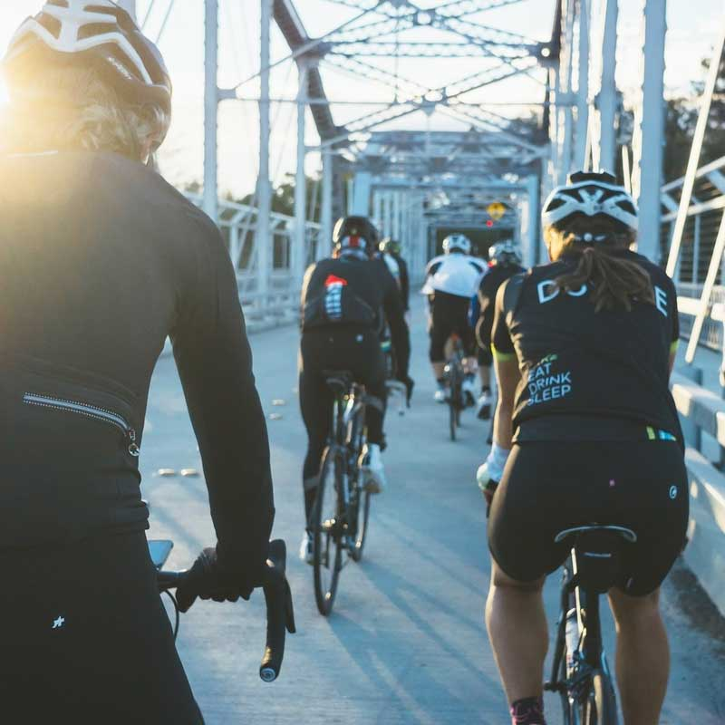

<!DOCTYPE html>
<html lang="zh">
<head>
          <meta charset="UTF-8">
          <meta http-equiv="X-UA-Compatible" content="IE=edge,chrome=1">
          <meta name="viewport" content="width=device-width, initial-scale=1.0">
          <title>基于Bootstrap仿Pinterest的网格瀑布流插件</title>
          <link href="bootstrap/css/bootstrap.min.css" rel="stylesheet">
          <link href="http://cdn.bootcss.com/font-awesome/4.6.3/css/font-awesome.min.css" rel="stylesheet">
          <link rel="stylesheet" type="text/css" href="css/demo.css">
          <link rel="stylesheet" href="css/main.css">
          </head>
          <body>

          <div class="container">
            <div class="waterfall"></div>
          </div>

          <script src="js/jquery-3.4.1.min.js" type="text/javascript"></script>
          <script src="js/bootstrap-waterfall.js"></script>
          <script id="waterfall-template" type="text/template">
      <ul class="list-group">
        <li class="list-group-item">
          <a href="javascript:;">
            
          </a>
        </li>
      <li class="list-group-item">
        <button type="button" class="btn btn-default btn-xs"></button>
        <button type="button" class="btn btn-default btn-xs pull-right" title="pin"><span class="glyphicon glyphicon-pushpin"></span></button>
      </li>
      <li class="list-group-item">
        <div class="media">
          <div class="media-left">
            <a href="javascript:;">
              
            </a>
          </div>
          <div class="media-body">
            <h5 class="media-heading">Liber</h5>
            <small>I love this pin!</small>
          </div>
        </div>
      </li>
      </ul>
    </script>
    <script>
      $('.waterfall')
        .data('bootstrap-waterfall-template', $('#waterfall-template').html())
        .waterfall();
    </script>
</body>
</html>